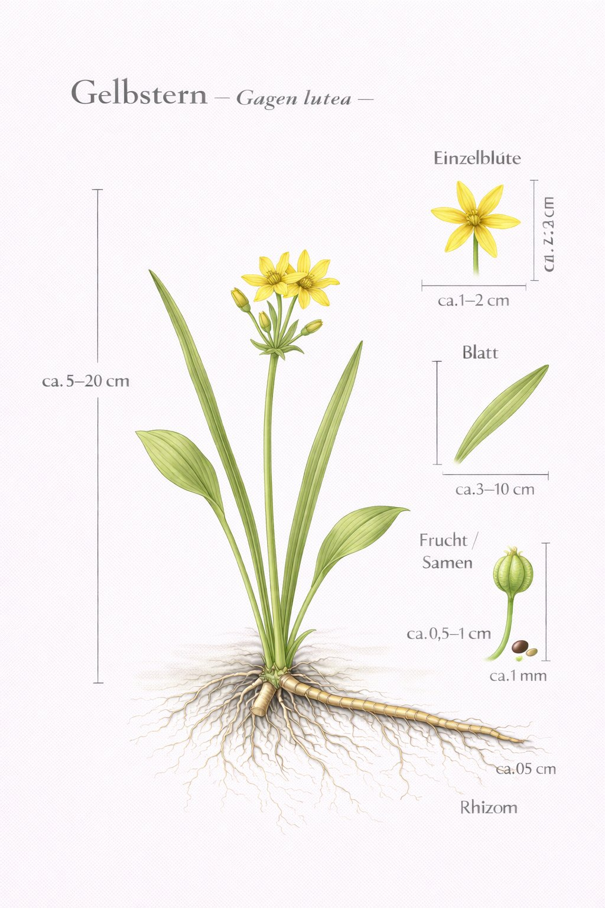
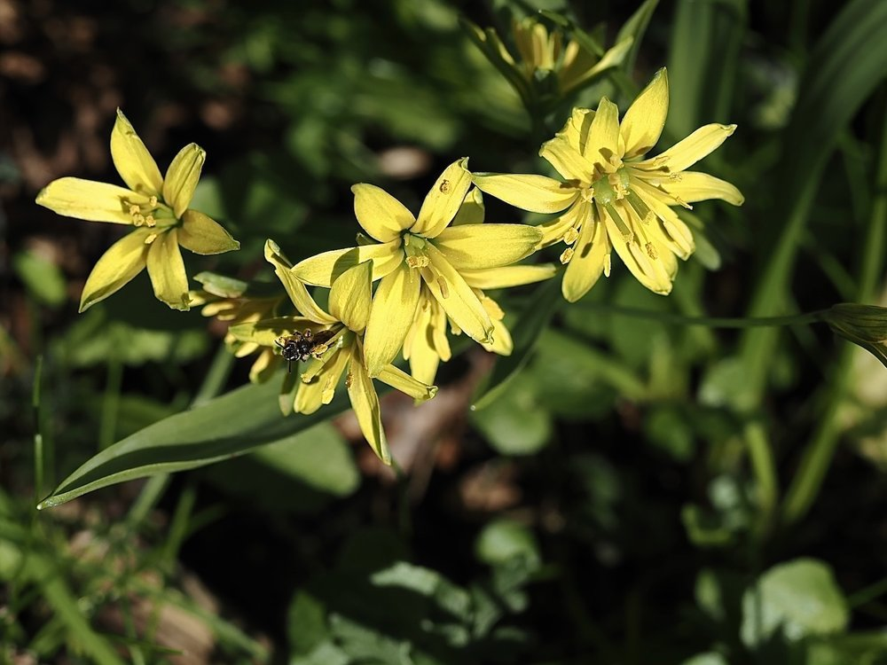

Nr. 7 · Frühblüher im Wald
Wald-Gelbstern
Gagea lutea
Klein, leicht übersehen – und botanisch eine der kompliziertesten Gattungen Europas.


Öffnet nur bei Sonne
Der Wald-Gelbstern ist eine konsequente Schönwetterpflanze: Bei Bewölkung bleibt die Blüte geschlossen. Das schützt den Pollen vor Regen und sammelt Wärme im Blüteninneren für frühe Bestäuber. Auf der Exkursion lässt sich das direkt beobachten: Sonne hervor – Blüte auf. Wolken – Blüte zu.
Apomixis – Klone ohne Vater
Manche Gagea-Arten brauchen zur Samenproduktion gar keinen Partner – Samen entstehen als genetische Klone der Mutterpflanze (Apomixis). Das macht die Gattung botanisch verwirrend: Jede Klonlinie gilt als eigene Art. Selbst Spezialisten sind manchmal ratlos – ein kleiner Trost für Anfänger.
Wissenswertes & Merksätze
Beste Bestimmungshilfe
Sechs Blütenblätter mit grünlichem Streifenmuster aussen – im Feld sofort erkennbar. Und: öffnet nur bei Sonne.
Zeigerpflanze
Sein Vorkommen zeigt frische, basenreiche Waldböden an – ein lebendiger Bodentest, den kein Labor billiger liefern kann.